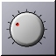
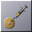
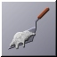
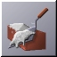

GNUstep: Artwork & Icon Collection: Application Icons
Standard GNUstep Distribution Software
These icons are for specific, standard GNUstep applications.
 |
Prefs.app_Tile.jpg : The
"Preferences" application for System and common UI/localisation
settings. Author: Andrew Lindesay. |
 |
GNUMail.app_Tile.jpg :
GNUstep's MIME compliant mail software. Author: Andrew Lindesay. |
 |
GNUMail.app_Tile.jpg : Mail
application when it's got mail in. Author: Andrew Lindesay. |
 |
ProjectCenter_Debug_Tile.jpg :
Debugger application icon. Author: Andrew Lindesay. |
 |
News.app_Tile.jpg : Usenet
reader icon for GNUstep Author: Andrew Lindesay. |
 |
Graffiti.app_Tile.jpg : A
GNUstep application icon for graphics apps. Author: Andrew Lindesay. |
 |
PrintSpool_Tile.app.jpg : A
printer spool system frontend icon Author: Andrew Lindesay. |
| Manuals.app_Tile.jpg : An icon
for a documentation viewer Author: Andrew Lindesay. |
|
| GNUSpace.app_Tile.jpg : The
general 'Workspace Manager' equivalent in OPENSTEP. Author : Unknown. |
|
 |
Ink.app_Tile.jpg : The GNUstep
text editor; sporting ASCII & RTF support. Author: Andrew Lindesay. |
 |
Installer.app_Tile.jpg :
Potential GNUstep installer Icon Author: Andrew Lindesay. |
 |
Gorm.app_Tile.jpg : Gorm allows
you to build UI elements, prototype class heirachies, and build
your application's front-end. Author: Andrew Lindesay. |
 |
Gorm.app_2_Tile.jpg : A
differing icon for that above. Author: Andrew Lindesay. |
 |
ProjectCenter.app_Tile.jpg :
For managing your programming projects, for doing compiles
etc... Author : Andrew Lindesay & Thomas Engel |
| Terminal.app_Tile.jpg Author: Andrew Lindesay. | |
 |
PPPControl.app_Tile.jpg Author: Andrew Lindesay. |
 |
BuildKernel.app_Tile.jpg Author: Andrew Lindesay. |